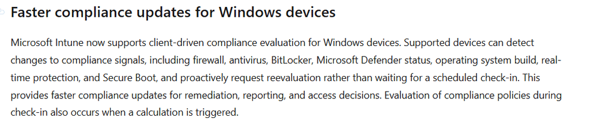
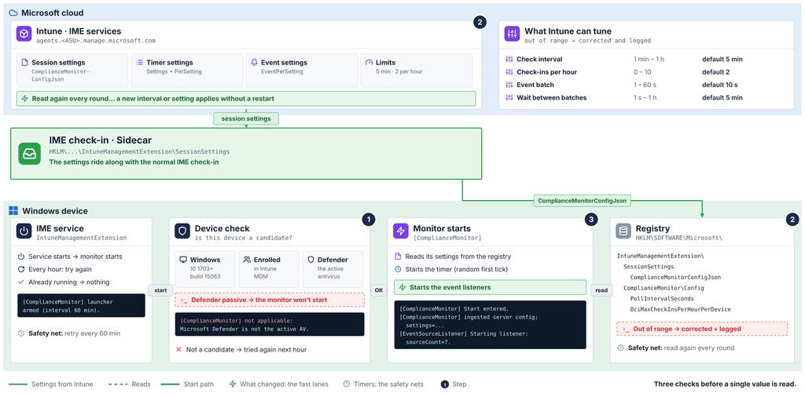
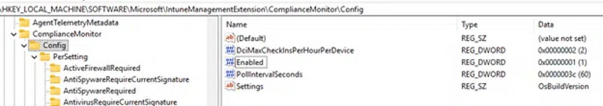
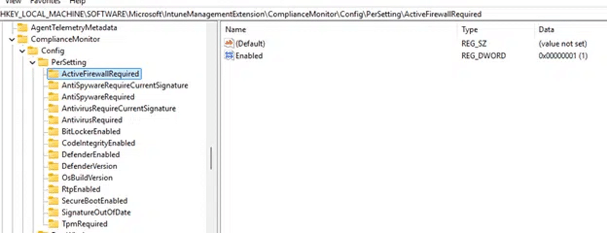
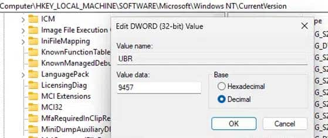
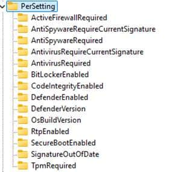
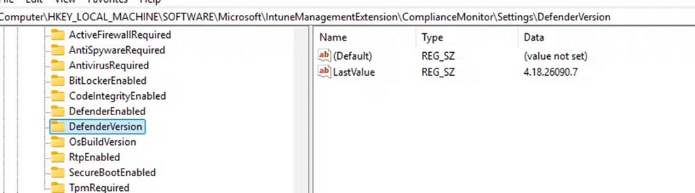
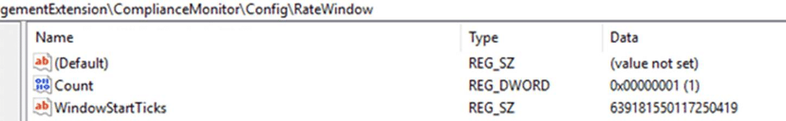

Microsoft has introduced client-driven compliance evaluation for Windows devices. The idea is simple. Instead of waiting for the next scheduled check-in, the device notices a change and asks Intune to check again.


So how does that work? The device has no new real-time compliance engine. A small part of the Intune Management Extension (IME) does all of that work: the compliance monitor. It monitors a short list of Windows settings, remembers what it saw last time, and when something changes, it starts a normal check-in. Intune then does what it always does: it evaluates the compliance policy.
The nice part is that you can follow the whole thing on the device itself. The IME writes every step to its log files, and it keeps its settings and the last values it saw in the registry. In this blog, we walk through the flow in ten steps, using the log lines and registry keys you can check yourself.
| The short version: The device doesn’t decide whether it is compliant. It only decides when to ask for a check-in. Intune still does the evaluation. It notices changes in two ways: a timer (every 5 minutes by default) and event listeners for Windows Security Center, Defender, BitLocker, and a few registry values. Intune decides which compliance checks it monitors, and by default it asks for at most 2 check-ins per hour. Fixing the compliance issue triggers a check-in, just like breaking something does. |
Why the device needs to detect the Compliance State
Most things in Intune start in the cloud. You change a policy, Intune sends a push, and the device checks in. Behind every push there is still a timer as a safety net, like the 8-hour MDM schedule.
Compliance doesn’t fit that model. When something changes on the device (Defender real-time protection is switched off, BitLocker is suspended, the firewall goes down), nothing can be pushed from the cloud. The cloud doesn’t know yet. Only the device knows.
Until the next scheduled check-in, Intune keeps showing the old compliance state, and Conditional Access keeps acting on it. It works the other way around too: a device that was fixed stays noncompliant until the schedule catches up. Client-driven compliance closes that gap by letting the device notice the change itself and ask for a check-in.
The Faster compliance updates for Windows devices Overview
This is the whole feature on one page. Intune sends the settings, the IME on the device notices, reads, compares, and decides, and the result is a normal check-in back to Intune. The numbers are the ten steps this blog walks through.

What you will see in the Compliance Monitor log
The compliance monitor writes to the IME log files in C:\ProgramData\Microsoft\IntuneManagementExtension\Logs. Every part of it uses its own prefix, so it is easy to follow:
| Log prefix | What it does |
| [ComplianceMonitor] | Starts the monitor, runs the timer and reads its settings |
| [EventSourceListener] / [EventSource] | Starts and stops the event listeners and reports Event Log events |
| [ComplianceEventListener] | Reports Security Center and registry changes |
| [ComplianceEventProcessor] | Handles a batch of events and checks if something really changed |
| [ComplianceSettingHelper] | Reads the current value of a setting |
| [DciHelper] | The check-in gate: decides if the device asks for a check-in |
| [ComplianceMonitorStore] | Saves settings and counters in the registry |
The Real-time Faster Compliance flow in ten steps
Steps 1 to 3 happen when the monitor starts. Steps 4 to 10 repeat every time the timer runs or an event comes in. The numbers match the badges in the diagrams.
- The device must qualify. Windows 10 1703 or later, enrolled in Intune, Defender as the active antivirus.
- Intune sends the rules. One JSON value in the registry decides what is watched and how often.
- The monitor starts. It starts a timer and, where available, the event listeners.
- Something changes. An event comes in, or the timer runs.
- Read the real value. The monitor reads the current value from Windows.
- Compare with the last value. A different value is a change, in either direction.
- The gate decides. Already handled, observe-only, hourly limit reached, or go.
- The device asks for a check-in. A normal MDM session with one extra alert.
- Intune evaluates. Intune checks what the device reports and updates the state.
- Save and count. The new value is saved and the check-in is counted, only after success.
Steps 1–3: Getting the monitor running
Before reading a single value, three things must be in place: a qualifying device, the settings from Intune, and a running monitor.


Step 1: The device must qualify
Before the monitor does anything, it checks if this device is a candidate. Three things must be true. If one of them isn’t, the log tells you which one:
| Check | What it means | Log line when it fails |
| Windows version | Windows 10 1703 (build 15063) or later | not applicable: OS build below Win10 1703. |
| MDM enrolled | The device is enrolled in Intune MDM | not applicable: device is not MDM-enrolled. |
| Defender active | Microsoft Defender is the active antivirus | not applicable: Microsoft Defender is not the active AV. |
That last one is worth knowing. If you use another antivirus and Defender runs in passive mode, the monitor doesn’t start at all.
Microsoft is also rolling the feature out in phases, so on some tenants the monitor simply doesn’t start yet. The IME tries again every hour. When the feature is turned on for you, the device picks it up without a restart:

Every hour the IME tries again to start the monitor (no-op when it is already running).
Step 2: Intune sends the Compliance rules
The monitor doesn’t decide what to watch. Intune does. The settings come along with the normal IME check-in and end up in the registry as one JSON value:

The monitor reads this value when it starts and again every round, so a change from Intune applies without a restart. It also keeps a copy under …\IntuneManagementExtension\ComplianceMonitor\Config. When the settings come in, you will see:

The settings from Intune came in. Here, all 14 settings are turned on.
The monitor’s own copy lives under …\ComplianceMonitor\Config, with the timer interval, the hourly limit, and one PerSetting key for every setting it watches:
The monitor’s own copy of its settings under ComplianceMonitor\Config.




This is what the JSON looks like, with the knobs Intune can turn:
{
"Enabled": true,
"PollIntervalSeconds": 300,
"DciMaxCheckInsPerHourPerDevice": 2,
"ComplianceEventProcessorBatchTimeSeconds": 10,
"ComplianceEventProcessorDelayTimeSeconds": 300,
"Settings": [ "ActiveFirewallRequired", "RtpEnabled", "OsBuildVersion" ],
"PerSetting": { "ActiveFirewallRequired": { "Enabled": true }, ... },
"EventPerSetting": { "RtpEnabled": { "Enabled": true }, ... }
}| Setting | What it does | Range | Default |
| PollIntervalSeconds | How often the timer checks | 1 min – 1 h | 5 min |
| DciMaxCheckInsPerHourPerDevice | How many check-ins the device may ask for per hour | 0 – 10 | 2 |
| ComplianceEventProcessorBatchTimeSeconds | How long events are collected before they are handled | 1 – 60 s | 10 s |
| ComplianceEventProcessorDelayTimeSeconds | How long to wait between two event batches | 1 s – 1 h | 5 min |
| Settings + PerSetting | Which settings the timer checks | – | – |
| EventPerSetting | Which settings may be handled through events | – | – |
| Enabled | false turns the monitor off | – | – |
If a value is outside its range, the monitor corrects it and logs it, for example:
[ComplianceMonitor] PollIntervalSeconds 10 clamped to 60 on read — possible registry tamper or stale write.
Step 3: The monitor starts
With a device that qualifies and its settings in place, the monitor starts. It starts a timer with a random first tick, so not every device checks at the same second. It also starts the event listeners:

[EventSourceListener] Starting listener: sourceCount=7.
The event listeners are newer than the timer and are rolled out separately. If you don’t see the listener line, the device only uses the timer for now. That still works; it just reacts a bit slower.
Steps 4–6: Noticing a change
Two ways to notice, one way to confirm. The event listeners are the fast lane, the timer is the safety net, and both end with the same read and the same comparison.

Step 4: Something changes
The timer
Every 5 minutes (or whatever Intune set), the monitor runs one round. It reads its settings again and then reads every setting Intune turned on, up to 14. Only one round runs at a time. If a round is still busy when the next one is due, the new one is skipped:
[ComplianceMonitor] Cycle skipped — previous cycle still running.
The event listeners
The timer is the safety net. The event listeners are the fast lane. They listen to seven sources, and each one shows up in the log with its own name when it starts:
[ComplianceEventListener] Windows Security Center listener started: source=wsc.general-change.
[EventSource] Event Log listener started: source=DefenderOperationalRtp,
channel=Microsoft-Windows-Windows Defender/Operational.
[ComplianceEventListener] Registry listener started: source=registry.os-version-change, …
| Source name in the log | What it listens to | Setting |
| wsc.general-change | Windows Security Center changes | ActiveFirewallRequired, AntivirusRequired |
| DefenderOperationalRtp | Defender Operational log, events 5000 and 5001 (real-time protection on/off) | RtpEnabled |
| BitLockerManagementEncryption | BitLocker Management log, events 768 and 770 | BitLockerEnabled |
| SecurityCenterDefenderService | Application log, SecurityCenter events 15 and 16 for Windows Defender | DefenderEnabled |
| registry.defender-version-change | HKLM\SOFTWARE\Microsoft\Windows Defender · InstallLocation | DefenderVersion |
| registry.os-version-change | HKLM\…\Windows NT\CurrentVersion · CurrentBuild, UBR | OsBuildVersion |
| registry.secure-boot-change | HKLM\SYSTEM\…\SecureBoot\State · UEFISecureBootEnabled | SecureBootEnabled |
The other settings (TPM, code integrity, signatures and anti-spyware) don’t have an event. The timer picks those up.
Want to see it yourself? On a test device, change the UBR value under HKLM\SOFTWARE\Microsoft\Windows NT\CurrentVersion. That is exactly the value the OsBuildVersion registry listener watches, so the monitor picks up the change right away.


Events are not handled one by one. The monitor collects them for 10 seconds, handles them together, and then waits 5 minutes before it handles the next batch. Events that come in while it waits are kept for the next batch. That way, a burst of Defender events doesn’t turn into a burst of check-ins.
The most important thing to understand: an event is only a hint. It tells the monitor which settings to look at now. The monitor still reads the real value and compares it, just like the timer does. A Defender event that doesn’t really change anything ends like this:
[ComplianceEventProcessor] Event batch processed without drift: settings=RtpEnabled.
Step 5: Read the real value
Whether it was the timer or an event, the monitor now reads the current value of each setting. Most values come from the MDM Bridge WMI provider, which is the same device status information Intune works with. So the monitor looks at roughly what Intune will look at.
| Setting | Where the value comes from |
| ActiveFirewallRequired | Firewall status (MDM Bridge) |
| AntivirusRequired · AntivirusRequireCurrentSignature | Antivirus status and signature status (MDM Bridge) |
| AntiSpywareRequired · AntiSpywareRequireCurrentSignature | Anti-spyware status and signature status (MDM Bridge) |
| BitLockerEnabled | Encryption status (MDM Bridge) |
| SecureBootEnabled | Secure Boot state (MDM Bridge) |
| DefenderEnabled · DefenderVersion · SignatureOutOfDate | Defender status: service, product version and signature age |
| RtpEnabled | Defender real-time protection setting |
| CodeIntegrityEnabled | Device Guard code integrity status |
| TpmRequired | TPM enabled and activated |
| OsBuildVersion | CurrentBuild and UBR from the registry, for example 26100.4652 |
These are the same fourteen names you will find as keys under …\ComplianceMonitor\Config\PerSetting:


If one reading fails, that is logged for that setting, and the other settings carry on.
Step 6: Compare with the last value
For every setting, the monitor remembers the last value it accepted. You can find it in the registry:


Same value? Nothing happened. Different value? That is a change, which the log calls a drift, with the old and the new value. The direction doesn’t matter. Firewall off is a change. Firewall back on is a change too. That is what lets a device get back to compliant quickly, and not only fall out of it.
[ComplianceEventProcessor] Event batch confirmed drift: settings=RtpEnabled.
Steps 7–10: From change to compliance state
A change doesn’t go straight to Intune. It passes the check-in gate first. Only then does the device check in and save the new value.

Step 7: The gate decides
The check-in gate logs as [DciHelper]. Before it lets a change through, it asks four questions:
- Already handled? The timer and an event can spot the same change. If the other one was faster, the change is simply ignored: “Ignoring stale drift snapshot because its baseline was already updated.”
- Observe only? In the first phase of the rollout, the gate only logs the change and saves the new value, but doesn’t ask for a check-in. You will see decision=Simulated.

- Hourly limit reached? By default, the device may ask for 2 check-ins per hour. When the limit is reached, the gate waits and doesn’t save the new value yet. The next round finds the same change again and tries again once the hour is over. You will see decision=DeviceCapReachedDeferred.

- Go. The device asks for a check-in (step 8).
One thing to keep in mind. The hourly counter is saved in the registry (…\ComplianceMonitor\Config\RateWindow), so it survives a restart. But when the IME starts and there is no recent counter, the gate plays it safe and starts the hour as if the limit was already reached. So right after an IME (re)start, the first hour can only wait:
[DciHelper] No persisted rate window found (first boot or registry missing); failing closed with cap=2
Step 8: The device asks for a check-in
When the gate says go, the IME asks Windows to start a new MDM session, with one extra alert added to it:
| Alert property | Value |
| Source | IntuneRealTimeCompliance |
| Type | DriftRetry |
| Target | LocalDevice |
| Data | RealTimeCompliance drift retry |
From here, it is a normal check-in, with the same enrollment and the same kind of MDM session you get when you press Sync. If Windows doesn’t start the session within 30 seconds, the attempt counts as failed. Both outcomes are in the log:

When Windows doesn’t start the session, you will see decision=TriggerFailed with an error code instead.
Step 9: Intune evaluates
This is why the monitor can stay so simple. It never tells Intune “compliant” or “not compliant”. It only makes sure the check-in happens now instead of later. During that check-in, the device reports its state, Intune checks it against the assigned compliance policies, and the admin center shows the result. Conditional Access follows from there.
When the setting changes back, the same thing happens the other way around.
Step 10: Save and count
Only when the check-in started successfully does the gate save the new value as LastValue and count the check-in in the hourly counter. If the check-in failed or was held back, nothing is saved. The next round sees the same change again and tries again.
The hourly counter lives next to the settings. Count is the number of check-ins in the current hour, and WindowStartTicks is when that hour started, in UTC ticks. The PowerShell snippet at the end of this blog turns it into a readable time.


What Faster Compliance (Client-Driven) does not do
- It doesn’t decide compliance on the device or send a verdict. Intune still evaluates.
- It doesn’t watch every compliance setting. There are 14 settings, and 8 of them have an event.
- It doesn’t ignore the hourly limit. A setting that keeps flipping can’t cause endless check-ins.
- It doesn’t run when Defender isn’t the active antivirus, or when the device isn’t enrolled in Intune MDM.
- It doesn’t promise real time. The observe-only phase, the hourly limit, the first hour after an IME start, the timer interval and the event batch can all hold a check-in back.
Before and after
Side by side, the difference is the gap between “the device changed” and “Intune knows”. Without client-driven compliance, that gap is the time until the next scheduled check-in. With it, the gap is the time to notice, a short batch and one check-in.

How to check it on your own device
Run these from an elevated PowerShell session. If a read is denied, run it as SYSTEM.
The settings Intune sent
Get-ItemProperty 'HKLM:\SOFTWARE\Microsoft\IntuneManagementExtension\ComplianceMonitor\Config' |
Select-Object Enabled, PollIntervalSeconds, DciMaxCheckInsPerHourPerDevice, ComplianceEventProcessorBatchTimeSeconds, ComplianceEventProcessorDelayTimeSeconds, Settings, EventSettingsThe last values it saw
Get-ChildItem 'HKLM:\SOFTWARE\Microsoft\IntuneManagementExtension\ComplianceMonitor\Settings' |
ForEach-Object { [pscustomobject]@{Setting = $_.PSChildName LastValue = (Get-ItemProperty $_.PSPath).LastValue } }The hourly counter
$rw = Get-ItemProperty 'HKLM:\SOFTWARE\Microsoft\IntuneManagementExtension\ComplianceMonitor\Config\RateWindow'
[pscustomobject]@{HourStartedUtc = [datetime]::new([long]$rw.WindowStartTicks, 'Utc') CheckIns = $rw.Count }The log lines
Select-String -Path "C:\ProgramData\Microsoft\IntuneManagementExtension\Logs\*.log" `
-Pattern '\[(ComplianceMonitor|DciHelper|ComplianceEventProcessor|ComplianceEventListener|EventSourceListener)\]'| Log line contains | What it tells you |
| not applicable: … | Step 1: the device doesn’t qualify (Windows version, enrollment or Defender) |
| launcher armed (interval 60 min) | Step 1: the IME will try to start the monitor every hour |
| ingested server config; settings=N | Step 2: the settings from Intune came in |
| Poll interval changed Xs -> Ys | Step 2: Intune changed the timer interval |
| Start entered. | Step 3: the monitor started |
| Starting listener: sourceCount=7 | Step 3: the event listeners started |
| Cycle skipped — previous cycle still running | Step 4: the previous round was still busy |
| Event batch confirmed drift: settings=… | Step 6: an event led to a real change |
| Event batch processed without drift | Step 6: an event, but nothing really changed |
| Ignoring stale drift snapshot | Step 7: the change was already handled |
| decision=Simulated | Step 7: observe-only, no check-in |
| decision=DeviceCapReachedDeferred | Step 7: hourly limit reached, tried again later |
| decision=Invoked … corrId=… | Steps 8–10: check-in started, value saved |
| decision=TriggerFailed … errorCode=… | Step 8: check-in failed, tried again next round |
Wrapping up
Faster compliance (Client-Driven) closes the gap where only the device knows that something changed. It does that without moving the compliance decision to the device. The IME watches a short list of settings, compares them with what it saw last time, and when something really changed, it asks for a normal check-in so Intune can do what it already does.
The event listeners make it fast: Security Center, Defender, BitLocker, and the registry. But an event is still only a hint. The value is always read again, always compared with the last value, and always passes the same gate with its hourly limit. Fast where it can be, careful where it has to be.